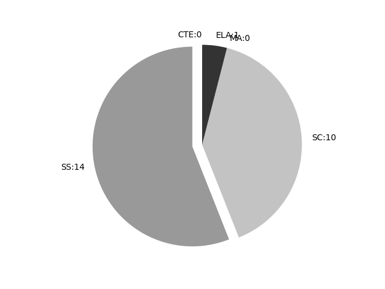

Maryland
Report date: 2021-07-08
The frequency of all keywords found in this state's standards: 25
Comparable state score: 1.197 (median: .303, SD: .324)
The frequency above is the sum of all keywords found in all of this state's four core academic standards and the state's CTE/career standards. This total count is broken down by keyword and discipline area below.
On this site, 'comparable scores' are calculated as: keywords found divided by total words in the standards document(s) - multiplied by 100,000. The comparable scores attempt to normalize data, accounting for very different sizes of curriculum guidance documentation.
Frequencies by keyword or phrase:- spatial: 23
- geospatial: 2
- GIS: 0

Frequencies by discipline area: - SS: 14
(Comp: 3.69) - SC: 10
(Comp: 1.203) - MA: 0
(Comp: 0.0) - ELA: 1
(Comp: 0.419) - CTE: 0
(Comp: 0.0)
Support files: Examples of keyword use by discipline area (and document): - ELA
- MCCRS Elem School (3-5).pdf, page:15, position:756
suspected, heard, wondered). L.3.6 Acquire and use accurately grade-appropriate conversational, general academic, and domain-specific words and phrases, including those that signal spatial and temporal relationships (e.g., After dinne
- SC
- Framework for K-12 Science Education.pdf, page:130, position:692
charge distributions (e.g., chemical bonds, metals).Energy stored in Þelds within a system can also be described as potential energy. For any system where the stored energy depends only on the spatial con- Þguration of the system and not on its - Framework for K-12 Science Education.pdf, page:180, position:669
scope and inter- disciplinary nature, past efforts to promote earth sciences literacy have presented this content in a wide variety of ways. In this chapter, we begin at the largest spatial scales of the universe and move toward increasing - Framework for K-12 Science Education.pdf, page:188, position:2454
surface is a complex and dynamic set of interconnected systemsÑprinci- pally the geosphere, hydrosphere, atmosphere, and biosphereÑthat interact over a wide range of temporal and spatial scales. All of EarthÕs processes are the res - Framework for K-12 Science Education.pdf, page:190, position:1166
Earth gains mass from the impacts of meteoroids and comets and loses mass from the escape of gases into space.EarthÕs systems are dynamic; they interact over a wide range of temporal and spatial scales and continually react to changing inßuence - Framework for K-12 Science Education.pdf, page:270, position:520
look different from earlier versions. For example, the use of technology-facilitated approachesÑsuch as teachersÕ video clubs to study their practices collaboratively[118] or the use of geospatial or modeling technologyÑwhile rare today, may bec - Framework for K-12 Science Education.pdf, page:284, position:1410
of a video club. Journal of the Learning Sciences, 18(1), 100-137.Trautmann, N.M., and MaKinster, J.G. (2010). Flexibly adaptive professional devel- opment in support of teaching science with geospatial technology. Journal of Science Teacher Educat - Framework for K-12 Science Education.pdf, page:356, position:2594
understand- ing of the objectives and procedures of experimentation in the science classroom.Journal of the Learning Sciences, 4(2), 131-166.Uttal, D.H. (2005). Spatial symbols and spatial thought: Cross-cultural, developmental, and his - Framework for K-12 Science Education.pdf, page:356, position:2574
J. (1995). StudentsÕ understand- ing of the objectives and procedures of experimentation in the science classroom.Journal of the Learning Sciences, 4(2), 131-166.Uttal, D.H. (2005). Spatial symbols and spatial thought: Cross-cultural, dev - Framework for K-12 Science Education.pdf, page:357, position:109
- Framework for K-12 Science Education.pdf, page:387, position:1971
118, 119, 121, 122, 238proportionality, 90, 91, 110, 121, 123, 166quantities and quantitative relationships, 51, 65, 88, 89,90, 91, 98, 106, 107, 115, 124, 126in scientiÞc studies, 89 spatial, 170, 179, 180and stability changes, 99, 100,
- SS
- Grade4.pdf, page:0, position:2471
3.0 GeographyStudents shall inquire about the role of culture, technology, and the environment in the location, distribution, and impact ofhuman activities using geographic tools and spatial thinking in order to demonstrate a signiÞcanc - Grade5.pdf, page:0, position:2490
3.0 GeographyStudents shall inquire about the role of culture, technology, and the environment in the location, distribution, and impact ofhuman activities using geographic tools and spatial thinking in order to demonstrate a signiÞcanc - Grade2.pdf, page:0, position:2486
3.0 GeographyStudents shall inquire about the role of culture, technology, and the environment in the location, distribution, and impact ofhuman activities using geographic tools and spatial thinking in order to demonstrate a signiÞcanc - HSUS.pdf, page:1, position:841
3.0 GeographyStudents shall inquire about the role of culture, technology, and the environment in the location, distribution,and impact of human activities using geographic tools and spatial thinking in order to demonstrate a signiÞcanc - Grade3.pdf, page:0, position:2486
3.0 GeographyStudents shall inquire about the role of culture, technology, and the environment in the location, distribution, and impact ofhuman activities using geographic tools and spatial thinking in order to demonstrate a signiÞcanc - Grade1.pdf, page:0, position:2486
3.0 GeographyStudents shall inquire about the role of culture, technology, and the environment in the location, distribution, and impact ofhuman activities using geographic tools and spatial thinking in order to demonstrate a signiÞcanc - PreK.pdf, page:0, position:2486
3.0 GeographyStudents shall inquire about the role of culture, technology, and the environment in the location, distribution, and impact ofhuman activities using geographic tools and spatial thinking in order to demonstrate a signiÞcanc - 8thGradeUnitedStatesHistoryFramework.pdf, page:0, position:2170
3.0 GeographyStudents shall inquire about the role of culture, technology, and the environment in the location, distribution, and impact ofhuman activities using geographic tools and spatial thinking in order to demonstrate a signiÞcance - ModernWorldHistoryFramework.pdf, page:0, position:713
events, and ideas by situating them in global, interregional, and regional contexts. Organizationally, world history requires students to shift between global, interregional, and regional spatial scales in order to emphasize interactions be - ModernWorldHistoryFramework.pdf, page:1, position:206
3.0 GeographyStudents shall inquire about the role of culture, technology, and the environment in the location, distribution, and impact ofhuman activities using geographic tools and spatial thinking in order to demonstrate a signiÞcanc - ModernWorldHistoryFramework.pdf, page:2, position:128
- MarylandSocialStudiesStandardsGrades6-7.pdf, page:9, position:2078
locations of places and regions, the distribution of landforms and water bodies, and historic changes in political boundaries, economic activities, and geographic representation. It requires using spatial and environmental perspectives to analyze geograp - AmericanGovernment.pdf, page:0, position:1821
3.0 GeographyStudents shall inquire about the role of culture, technology, and the environment in the location, distribution, and impact ofhuman activities using geographic tools and spatial thinking in order to demonstrate a signiÞcanc - Kindergarten.pdf, page:0, position:2486
3.0 GeographyStudents shall inquire about the role of culture, technology, and the environment in the location, distribution, and impact ofhuman activities using geographic tools and spatial thinking in order to demonstrate a signiÞcanc
{kind=link}